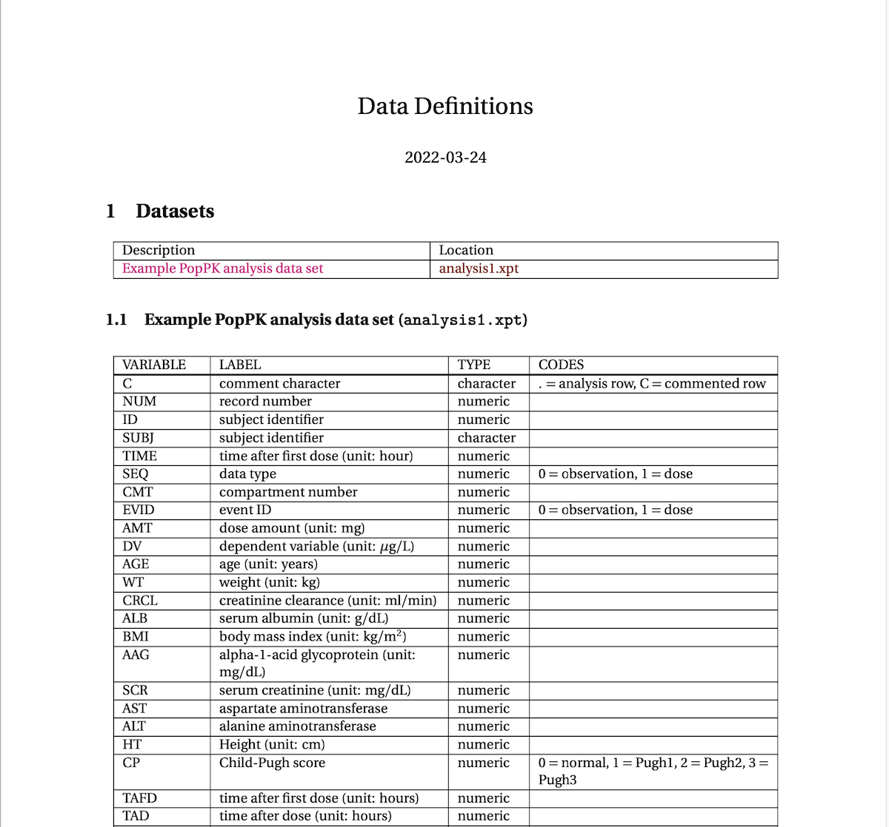

Use yspec to document analysis data sets and utilize data attributes in a modeling and simulation workflow.
You can install the development version of yspec from GitHub with:
# install.packages("devtools")
devtools::install_github("metrumresearchgroup/yspec")Before or while programming an analysis data set, write out data definitions in yaml format:
library(yspec)
library(dplyr)
library(tidyr)
readLines("inst/internal/analysis1.yml")[1:20] %>% writeLines()
. SETUP__:
. description: Example PopPK analysis data set
. sponsor: example-project
. projectnumber: EXAMPK1011F
. use_internal_db: true
. glue:
. bmiunits: "kg/m$^2$"
. flags:
. covariate: [AGE:SCR, HT, AST:ALT]
. lookup_file: "look.yml"
. extend_file: "analysis1-ext.yml"
. C:
. NUM:
. ID:
. SUBJ: !look
. TIME: !look
. label: time after first dose
. unit: hour
. SEQ:
. label: data typeNow use yspec to read that into a object in R
spec <- ys_load("inst/internal/analysis1.yml")Query this object to get a sense of what is in the data overall
head(spec)
. name info unit short source
. 1 C cd- . comment character ysdb_internal
. 2 NUM --- . record number ysdb_internal
. 3 ID --- . subject identifier ysdb_internal
. 4 SUBJ c-- . subject identifier ysdb_internal
. 5 TIME --- hour TIME look
. 6 SEQ -d- . SEQ .
. 7 CMT --- . compartment number ysdb_internal
. 8 EVID -d- . event ID ysdb_internal
. 9 AMT --- mg dose amount ysdb_internal
. 10 DV --- micrograms/L dependent variable ysdb_internalor on a column by column basis for continuous data
as well as categorical data
spec$BLQ
. name value
. col BLQ
. type numeric
. short below limit of quantification
. value 0 : above QL
. 1 : below QLAnd we can render a define.pdf file as well

This section illustrates a few examples for how yspec might be used (other than creating define.pdf).
To make it easier to get started with yspec, we’ve included example data and corresponding yspec object in the package
data <- ys_help$data()
spec <- ys_help$spec()When you have discrete data, “decodes” can be provided and used to create factors in the data. We have that for the RF column
spec$RF
. name value
. col RF
. type character
. short renal function stage
. value norm : Normal
. mild : Mild
. mod : Moderate
. sev : SevereNow we’ll have a column called RF_f which is a factor version of RF
Every column can have a “short” name; for WT it is
Every continuous data can also have a unit; again for WT
We use the spec to “recode” using this information. First create a data summary in long format
summ <-
data %>%
select(WT, ALB, AGE) %>%
pivot_longer(everything()) %>%
group_by(name) %>%
summarise(Mean = mean(value), Sd = sd(value))
summ
. # A tibble: 3 × 3
. name Mean Sd
. <chr> <dbl> <dbl>
. 1 AGE 33.8 8.60
. 2 ALB 4.30 0.707
. 3 WT 70.9 12.8To recode, pull the information from spec
There are several functions for working on your yspec object
Select some columns
body_size <- ys_select(spec, WT, BMI, HT)
body_size
. name info unit short source
. WT --- kg weight ysdb_internal
. BMI --- m2/kg BMI ysdb_internal
. HT --- cm height ysdb_internalFilter based on some flags that were set
ys_filter(spec, covariate)
. name info unit short source
. AGE --- years age ysdb_internal
. WT --- kg weight ysdb_internal
. CRCL --- ml/min CRCL .
. ALB --- g/dL albumin ysdb_internal
. BMI --- m2/kg BMI ysdb_internal
. AAG --- mg/dL alpha-1-acid glycoprotein .
. SCR --- mg/dL serum creatinine .
. AST --- . aspartate aminotransferase .
. ALT --- . alanine aminotransferase .
. HT --- cm height ysdb_internal
. CP -d- . Child-Pugh score lookRename
An analysis project typically has several data sets that can be documented together. We make a project like this
pk <- ys_load("inst/spec/DEM104101F_PK.yml")
pkpd <- ys_load("inst/spec/DEM104101F_PKPD.yml")
ae <- ys_load("inst/spec/DEM104101F_AE.yml")proj <- ys_project(pk, pkpd, ae)
proj
. projectnumber: ABC101104F
. sponsor: ABC-Pharma
. --------------------------------------------
. datafiles:
. name description data_stem
. DEM104101F_PK Population PK analysis data set DEM104101F_PK
. DEM104101F_PKPD Population PKPD analysis data set DEM104101F_PKPD
. DEM104101F_AE AE analysis data set DEM0104101F_AE_2This object can be rendered into a single define.pdf document.